스페인 여행기 (1) - 카탈루냐는 스페인이 아니다
게시: 2017-01-07T16:13:35+09:00
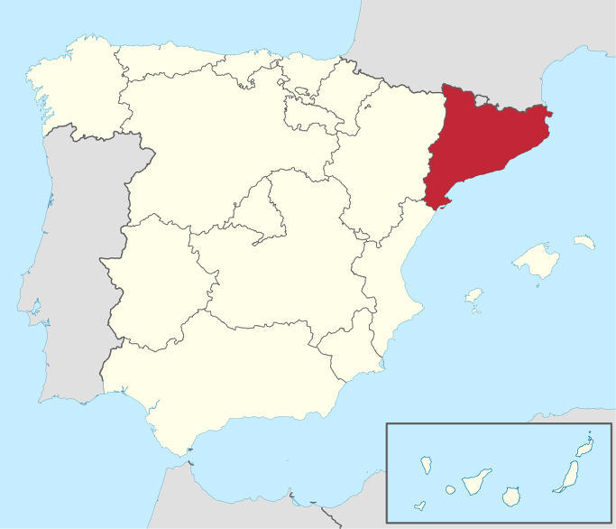
(카탈루냐는 자주색으로 표시된 부분입니다.)
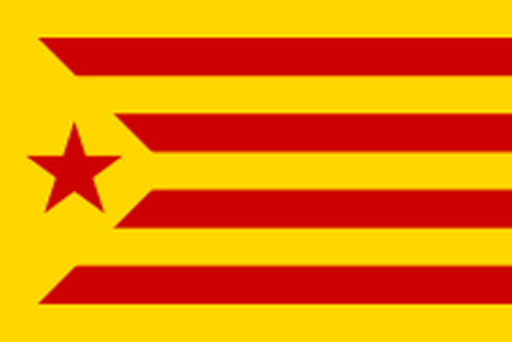
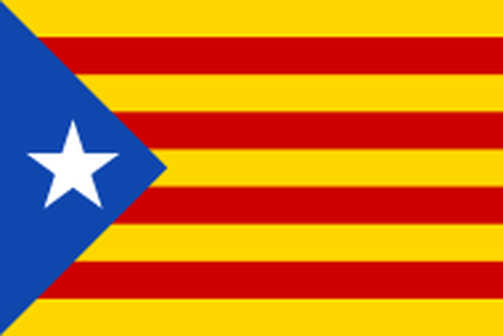
(저 카탈루냐 깃발은 프랑코 장군의 30년 넘는 독재 기간 중 철저히 금지되었던 것입니다. 그때의 통한이 쌓인 듯, 바르셀로나 시내를 돌아다니다보면 특별한 날이 아닌데도 저렇게 베란다에 낡은 카탈루냐 깃발을 걸어놓은 집들이 꽤 자주 보입니다. 우리는 일제시대의 기억 때문에 일단 독립이라면 무조건 만세를 외쳐주는 것이 기본 정서지요.)
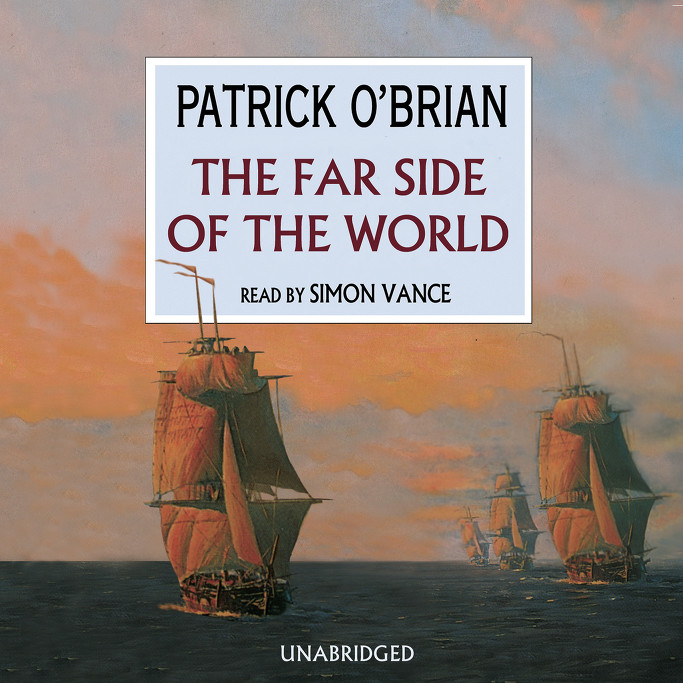
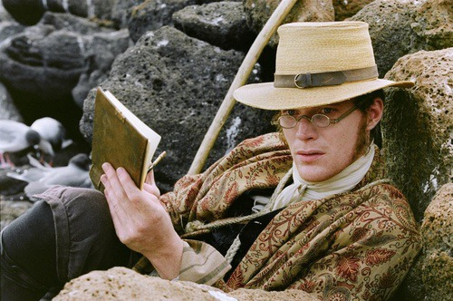
(나폴레옹 전쟁 당시 영국 해군 장교의 모험담을 그린 오브리-머투어린(Aubrey-Maturin) 소설 시리즈의 두 주인공 중 1명인 스티븐 머투어린(Stephen Maturin)은 출신 배경과 활동 영역이 매우 복잡한 사내입니다. 그는 아버지가 아일랜드인이고, 어머니는 스페인 중에서도 카탈루냐(Catalonia, Catalunya) 사람입니다. 머투어린 본인의 국적은 영국으로 되어 있습니다만, 이 사내의 모국어는 카탈란어입니다. 스티븐은 아일랜드 켈트어와 카탈란어, 스페인어와 프랑스어를 자유자재로 구사하고. 직업은 의사이고 취미는 박물학자인데, 비밀에 감춰진 그의 신분은 대영제국 해군성을 위해 무보수로 일하는 첩보원입니다. 그런데 여기서 끝나지 않습니다. 대영제국을 위해 일하는 첩보원치고는 아이러니컬하게도, 그는 과거 아일랜드 독립당원으로 일했고, 지금은 카탈루냐 독립을 위해 활동하는 사람입니다. 시리즈 중 Far side of the world 편을 영화화한 Master and Commander에서는 이 머투어린 역을 폴 베타니가 맡았습니다. 머투어린은 마르고 왜소한 사람인데, 키가 큰 베타니와는 다소 어울리지 않는다고 생각했습니다.)
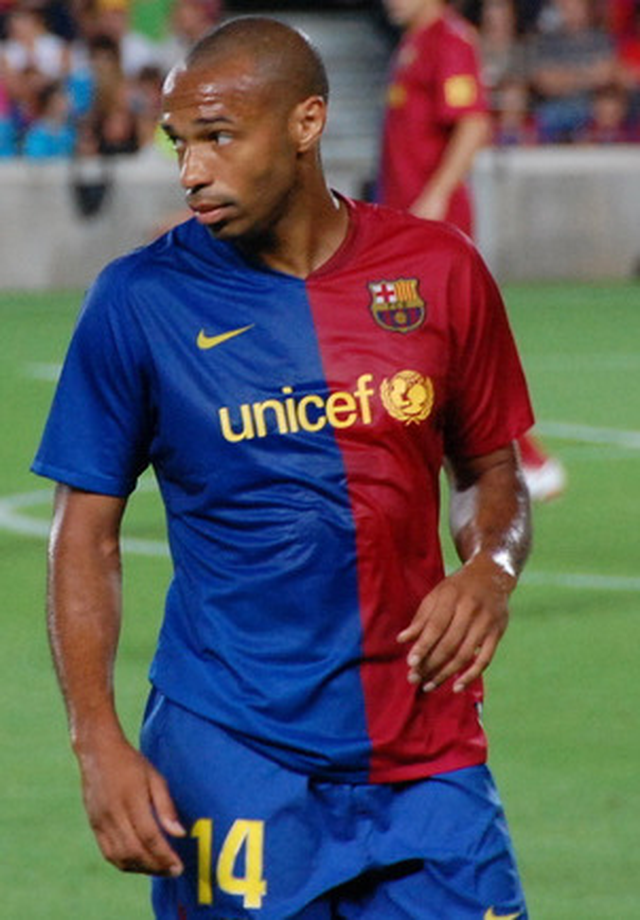
아스널의 전설적 축구선수인 티에리 앙리는 아스널에서 전성기를 보낸 이후, FC 바르셀로나에서 임대 선수로 약 3년 간 뛴 적이 있습니다. 거기서도 괜찮은 활약을 했는데, 바르셀로나로 그를 찾아간 영국 매체와의 인터뷰에서 이런 발언을 했다가 스페인 언론에서 크게 문제가 된 적이 있었습니다. 주로 바르셀로나 사람들을 뿌듯하게, 그리고 나머지 스페인 사람들을 발끈하게 만들었지요.
"What I believe is this; Catalunya is not Spain, it is something else and you have to feel it." (저는 이렇게 믿습니다. 카탈루냐는 스페인이 아니라고요. 카탈루냐는 뭔가 다른 나라이고, 당신도 그걸 느끼셔야 합니다.)
스페인에는 스페인어 외에도 갈리시아어(galegos)와 바스크어, 아라곤 방언과 아스투리안어, 옥시탄어 등 방언이 많습니다만, 바스크와 카탈루냐는 특히 독립에 대해 열정적입니다. 그 중에서도 특히 카탈루냐는 넉넉한 경제적 성공을 바탕으로 그 독립 운동이 활발히 추진되고 있고, 그리고 유명한 FC 바르셀로나와 레알 마드리드의 경쟁 관계에 의해 더욱 유명세를 타고 있습니다.
이미 잘 아시는 분들께는 지루한 이야기일테니 간략히 요약하면 카탈루냐의 독립운동의 기원은 결국 언어의 차이가 결정적인 역할을 한 것 같습니다. 원래 카탈루냐는 아라곤 왕국에 소속된 지방이었다가, 아라곤 왕 페르난도 2세와 카스티야-레온 왕국의 이사벨라 1세가 결혼하면서 결국 통일 스페인 왕국으로 합쳐지게 되었습니다. 그러나 내부 교통망이 형편없고 지방 간의 교류도 별로 없던 스페인 내부 사정상, 대국인 카스티야와 소국인 카탈루냐의 사이는 별로 좋지 않았습니다. 그러다 유럽에 30년 전쟁이 발발하면서, 카스티야 군대가 카탈루냐에 진주하게 되었습니다. 같은 민족으로 구성된 군대라고 해도, 군대가 민간 주택에 숙영하게 되면 경제적 부담 때문에라도 싫어할 수 밖에 없습니다. 그러니 말도 다르고 풍습도 다른데다 점령군처럼 으스대는 카스티야군을 카탈루냐 사람들이 좋아할 리가 없었지요. 이는 결국 1640년 카탈루냐 반란으로 이어져 거의 20년 간 프랑스-스페인-카탈루냐 간에 죽고 죽이며 원한을 쌓았습니다.
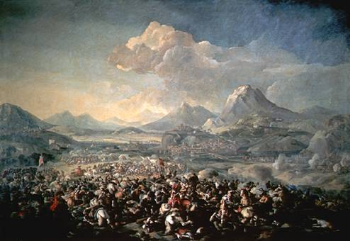
(카탈루냐 반란 전쟁 중인 1641년 몬주익 전투의 모습입니다. 이 반란 전쟁에는 스페인에서의 이권을 탐낸 프랑스가 카탈루냐를 지원한 것이 큰 역할을 했습니다. 그렇다고 카탈루냐 반란군을 '외국과 결탁하여 조국을 배신한 천하의 죄인들'이라고 비난할 수는 없습니다. 일제 시대 때 중국의 지원을 받아 조선독립운동을 했던 의사들을 '중국에 붙어 천황폐하의 은혜를 배신한 불령선인'이라고 부르는 것과 똑같은 것이지요.)
카탈루냐로서는 비극이었던 것이, 그 이후에 벌어진 여러가지 사건들, 그러니까 스페인 왕위 계승 전쟁이라든가 1930년대의 스페인 내전에서 카탈루냐는 항상 지는 쪽 편에서 싸웠다는 것입니다. 특히 헤밍웨이의 '무기여 잘 있거라'에서 로버트 조던과 함께 공화국 편을 들었던 것이 카탈루냐에게 큰 상처를 남겼습니다. 피비린내 나는 스페인 내전에서 쿠데타 파시스트 독재자인 프랑코 장군에게 1939년 1월 26일 결국 바르셀로나가 함락될 때, 수많은 시민들이 파시스트 정권의 보복을 피해 프랑스로 탈출했고, 실제로 프랑코는 당시는 물론 이후로도 약 30년 넘게 지속된 독재 통치 중 카탈루냐에 대해 혹독한 탄압 조치를 취했습니다. 카탈루냐 주 깃발을 쓰지 못 하게 함은 물론, 카탈란어를 엄금했으니, 거의 일제시대 치하에서 신음하던 한국과 비슷한 처지였던 것입니다.
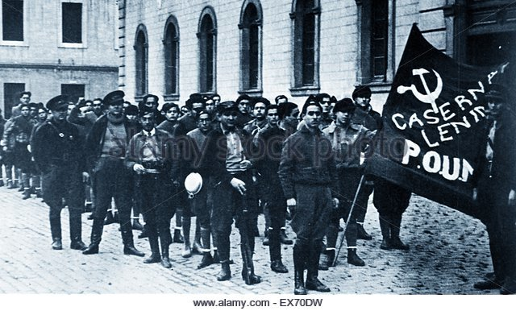
(내전 기간 중 바르셀로나 시내에 모인 마르크스주의 정당원들입니다. 당시 파시스트 쿠데타 정권에 반대하는 공화국파에는 사회주의자, 공산주의자, 소련파에 헤밍웨이와 무정부주의자까지 갖가지 부류가 다 있었습니다. 배경에 영국 작가인 조지 오웰이 서있다는데, 저는 못 찾겠습니다. Source : http://www.alamy.com/stock-photo/spanish-civil-war-1936-barcelona.html )
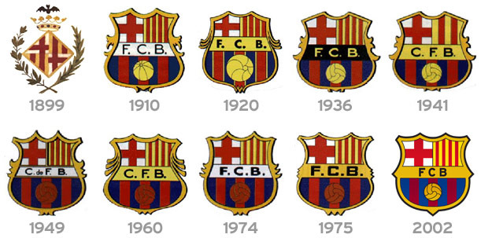
(가우디 투어를 안내해주신 유로자전거나라 가이드 분 설명으로는, FC 바르셀로나의 유니폼 자체가 금지된 카탈루냐 깃발을 변형한 것이라고 했습니다만, 저 FC 바르셀로나 엠블럼의 시대적 변화를 보면 1910년 경부터 이미 사용된 것입니다.)
그런 상황에서 유일하게 카탈루냐 사람들이 스페인에 대한 분노를 터뜨릴 수 있었던 것이 바로 축구였습니다. FC 바르셀로나와 레알 마드리드의 경쟁심은 그냥 누가 더 축구를 더 잘하느냐에 대한 것이 아닙니다. 불과 70여년 전, 참혹한 내전 끝에 독재자에게 저항했다는 이유로 할아버지 할머니를 총살했던 마드리드 사람들과의 투쟁인 것입니다. 특히 프랑코 치하에서 카탈루냐 주 깃발을 사용하는 것은 엄격히 금지되었는데, 유일하게 카탈루냐 깃발의 상징을 볼 수 있는 곳이 바로 FC 바르셀로나의 엠블럼이었습니다. 그래서 FC 바르셀로나의 모토가 "Més que un club" (More than a club), 즉 "축구팀 그 이상의 것"이라는 것이 괜히 나온 것이 아닌 것입니다.
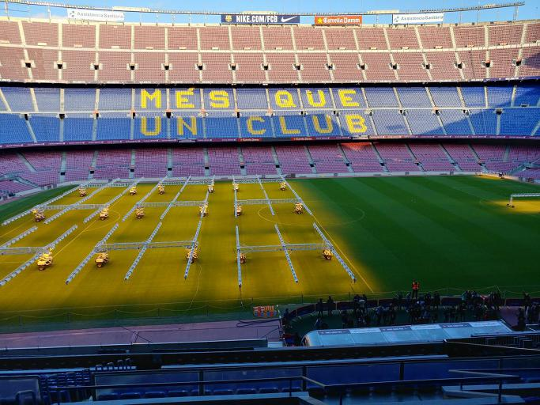
(관중석에 선명한 "Més que un club" 슬로건을 보십시요. Camp Nou는 흔히 캄프누로 읽지만, 정작 카탈란어로는 캄프노우로 읽어야 한답니다. 이번 여행에서 천추의 한 중 하나가 메시의 경기를 현장에서 볼 수 없었다는 것입니다... 제가 돌아온 뒤인 1월 5일에 경기가 있더라구요. 더 아쉬웠던 것은 그냥 경기장 투어에 25유로가 드는데, 실제 경기는 꼭대기 자리가 30유로부터 시작한다는, 즉 비용에서는 큰 차이가 없다는 점이었습니다.)
카탈루냐는 원래 1932년 자치권을 획득했다가 프랑코의 파시스트 정당이 스페인 내전에서 승리하면서 자치권을 잃었습니다. 그러다 프랑코가 죽은 지 4년 뒤인 1979년에야 다시 자치권을 되찾고, 카탈란어가 다시 카탈루냐 제1의 공식 언어가 되었습니다. 그래서, 바르셀로나 공항에 내리면서 보니 맨 위에 쓰인 것이 카탈란어, 다음이 스페인어, 그리고 그 밑에 영어가 있더군요. 이런 모습은 기차역 등 곳곳의 공공 장소에서 볼 수 있습니다.
저는 카탈란어는 커녕 스페인어도 모르니까, 카탈란어는 들어보니까 어떻더라는 말씀은 드릴 수 없습니다만, 그냥 표지판을 보고도 스페인어와 카탈란어의 차이를 분명히 느낄 수 있었습니다. 요약하면 스페인어와 프랑스어가 섞인 듯한 모습이더군요.
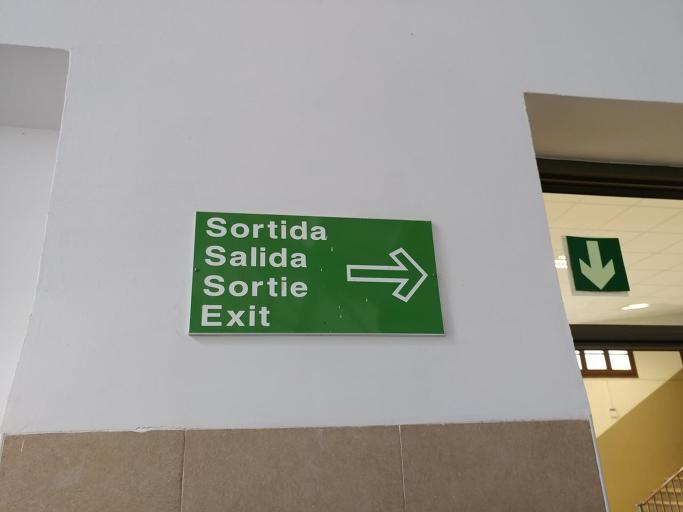
가령 출구(exit)를 뜻하는 스페인어는 salida(살리다)입니다. 불어로는 sortie(소흐띠)입니다. 카탈란어로는 sortida(소르띠다)더군요.
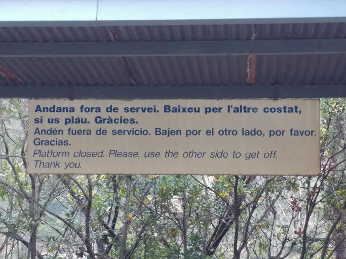
또 제발(please)를 뜻하는 스페인어는 por favor(뽀르 파보르)입니다. 불어로는 s'il vous plait(실 부 쁠레)입니다. 카탈란어로는 si us plau(찌 우스 플라우)입니다. 스페인어 por favor를 영어로 직역하면 by favor(부탁으로)이고, 불어는 if it pleases you(그게 너에게 괜찮다면), 카탈란어도 if that pleases(그게 괜찮다면) 입니다. 확실히 스페인어와는 많이 다른 것을 보실 수 있습니다.
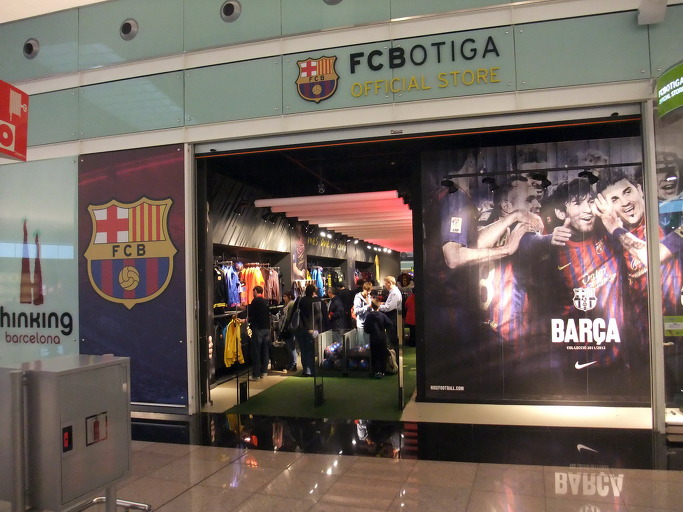
(FC 바르셀로나의 공식 샵을 FC Botiga 라고 하는데, 이걸 영어로 하면 그냥 FC Shop 입니다. 스페인어로는 FC Tienda 이지만, 불어로 하면 FC Boutique 입니다. 카탈란어는 확실히 불어와 가까운 것 같습니다.)
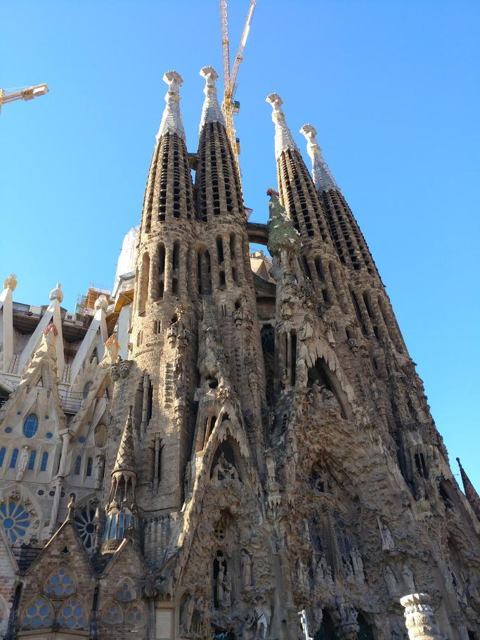
(가우디의 사그라다 파밀리아 성당에 대해 바르셀로나가 쏟는 정성과 긍지도, 스페인과 차별되는 카탈루냐의 자존심이 꽤 큰 부분을 차지하는 것 같습니다.)
이렇게 역사와 언어가 다른 민족이 하나의 국가를 이루며 사는 것은 쉽지 않은 일입니다. 그래도 차별이나 편견, 강요가 없다면 하나의 사회를 이루는 것이 규모의 경제라는 점을 생각하면 더 유리하겠지요. 반면에 역사와 언어가 같다고 해도 구성원 간에 종교나 출신 지역, 계급에 대한 차별이나 편견이 팽배한 사회는 유지될 수 없습니다.
또, 과거 청산이 제대로 되지 않은 상태에서 이웃나라와 협력한다는 것도 쉽지 않은 일입니다. 자신들은 전범들을 떠받드는 서낭당을 정부 관료들이 버젓이 참배하면서, 남의 나라 민간 단체가 자기 영토에 평화적 기념물을 세우는 것에 대해 '용납할 수 없다'고 대노하는 모습은 정말 이해가 가지 않습니다. 그것보다 더 이해가 안 가는 것은 그런 어거지에 대꾸도 제대로 못 하고 쩔쩔 매는 우리 정부의 굴욕적인 모습입니다. 싸드 문제로 중국에게 하듯이, "내정 간섭 ㄴㄴ"라고 당당히 대했으면 합니다.